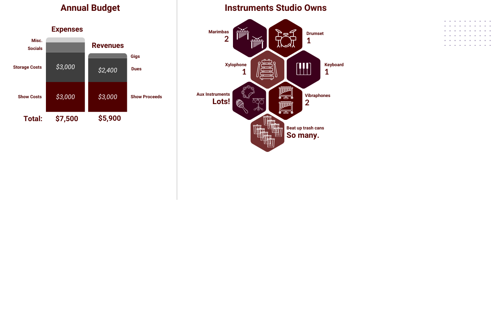

Donate to Percussion Studio!
Percussion Studio was founded in 1999 and has run on student membership fees to cover our costs every semester. As we all know, things have gotten more expensive since 1999, so we are happy to have your support! Review the two options below for how you can support Percussion Studio today:
| Lasting Legacy | Immediate Impact |
|---|---|
|
A group of Former Percussion Studio Members has established an
ENDOWMENT through the Texas A&M Foundation,
which directly benefits the studio. This endowment will continuously generate
funds for Studio each year, forever.
Learn More About the Endowment |
We have identified immediate needs that you can make a cash
DONATION towards, such as smaller equipment,
which will help to put on a banging show this semester!
See items and donation amounts |
Need Help Deciding Between These Options?
Endowment Details & FAQ
How can I give to the endowment?
| Method | Details |
|---|---|
| BEST WAY: Write a check |
Write a check to "Texas A&M Foundation" In the memo line: Acct #400-58956, Percussion Studio Excellent Excellence Endowment Mail to: Texas A&M Foundation, 401 George Bush Drive, College Station, TX 77840 |
| Donate by Credit Card | Donate online at this link! |
| Send a Wire Transfer | Wire transfers are accepted (see these instructions). |
Stock contributions are also accepted, as well as other investments! Rather than list all those options, email percussionstudioalumni@gmail.com and a former Percussion Studio member who set up the endowment at and we can get you in touch with the right people.
What is an endowment?
Money held as an investment managed by the Texas A&M Foundation. The principal of the investment generates interest earnings. Our endowment’s stipulations will make sure the interest earnings are passed along to Percussion Studio, annually, for life. Want more details on endowment? The folks at the Foundation do a good job of explaining it all here.
How much are we trying to raise?
We are hoping to raise at least $75,000 in commitments for the endowment balance by the end of 2025. This will generate around $3,000 in interest earnings for the organization per year. Again, for life.
Why an endowment? And why are we trying to raise $75,000?
Percussion Studio bears more costs to operate than back when it was formed in 1999. Studio rents a climate-controlled storage unit where they store their equipment and rehearse there. Studio owns their equipment now, and needs to repair it or replace it occasionally. The goal of this endowment is to provide Studio additional support to cover these operational costs so that they will not cease to exist because the current members cannot afford to keep it up on their own.
What if I only have $10 to give?
Great, you can still donate it! Any amount helps us make progress towards the goal.
Does your company match? Make them chip in too and double your contribution!
How do I know that Percussion Studio will not blow their endowment earnings on something dumb?
The staff advisor of Percussion Studio (AKA, the adult) oversees the money transfer and approves the expenditures made by the organization with these funds. The advisor will ensure the funds are spent on the operational needs of the organization.
What is Percussion Studio even up to these days?
The organization has 40 members and continues to work all semester towards a “big show” at Rudder Auditorium. Members join the group through an audition process. They continue to play gigs and are the drumline at Aggie Women’s Soccer games. They also have social events like a hamburger cookout, formals, retreats, and other spontaneous shenanigans. Check out their Instagram to get an idea.
I still have questions.
Cool, send them to percussionstudioalumni@gmail.com and a former Percussion Studio member who helped establish the endowment will get back to you.